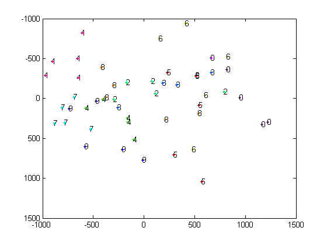
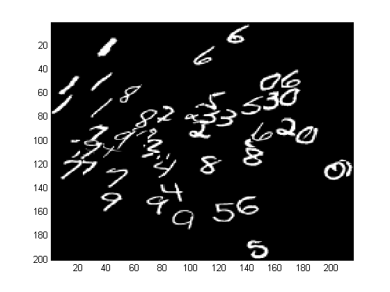

PCA digit visualization demo
Based on code by Nando de Freitas.
% This file is from pmtk3.googlecode.com loadData('uspsAll'); % data(1:256, 1:1100, 1:10) figure; i = 1; for c=1:10 for j=1:2 subplot(4,5,i) imagesc(reshape(data(:,j,c),[16 16])); axis off colormap(gray) i=i+1; end end nc = 5; % number of examples of each class X = double(reshape(data(:,1:nc,:), [256 nc*10]))'; [B, Z] = pcaPmtk(X, 2); color = hsvrand(10); figure(1);clf n = size(X,1); ndx = 1:nc; for c=1:10 if c==10, cname='0'; else cname = sprintf('%d', c); end h=plot(Z(ndx,1), Z(ndx, 2), '.'); hold on set(h,'color',color(c,:)); for i=1:length(ndx) text(Z(ndx(i),1), Z(ndx(i),2), cname); end ndx = ndx+nc; end axis ij % scale the PCs to be in 0:1 pc = Z; pc = pc + abs(min(pc(:))); pc = pc ./ abs(max(pc(:))); % scale the PCs to be integer coordinates within the image S =200; pc(:,1) = max(1,round(pc(:,1) * S)); pc(:,2) = max(1,round(pc(:,2) * S)); img = zeros(S,S); % Background image on which small images are placed. [r,c] = size(pc); for i=1:1:size(X,1) img(pc(i,2):pc(i,2)+15, pc(i,1):pc(i,1)+15) = reshape(X(i,:),16,16); end; figure(2);clf imagesc(img); colormap('gray'); axis ij 